Position-based dynamics for PSE simulations
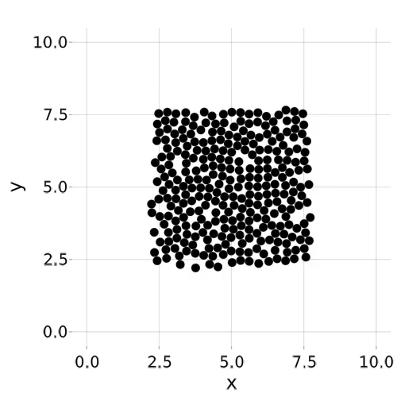
## Contents 1. Overview 2. Gradient flow model 3. Conditional stability of DAHA 4. Position-based dynamics (PBD) 5. Comparison
# Overview
## I want to... 1. <!-- .element: class="fragment" --> Replace quasi-steady state model $$\min_x W(x) \quad\text{s.t.}\quad c_k(x) \geq 0 $$ with gradient flow model $$\mu \dot x = -\nabla W + \sum_k \lambda_k \nabla c_k, \quad\text{s.t.} c_k(x) \geq 0.$$ 2. <!-- .element: class="fragment" --> Use position-based dynamics (PBD) instead of damped Arrow-Hurwiz algorithm (DAHA).
## Why? - Accuray: DAHA does not fully reach local equilibria. - Simplicity: DAHA solves a numerically much harder problem than neccesary. - Speed: Current runtime is 60 minutes per simulation. --- ### Gradient flow model improves accuracy. <!-- .element: class="fragment" --> ### PBD yields speed and simplicity. <!-- .element: class="fragment" -->
## Long story short: DAHA: 60 minutes | PBD: 90 seconds runtime <video controls data-autoplay src="data/pbd.mp4" style="height:500px"></video>
## Long story short (cont): DAHA: diverges | PBD: 5 minutes runtime <video controls data-autoplay src="data/proliferation.mp4" style="height:500px"></video>
# Gradient flow model
## Derivation of the gradient flow model - <!-- .element: class="fragment" --> For $T \mapsto T + \Delta T$ we solve $$\min_x W(x) \quad\text{s.t.}\quad c_k(x) \geq 0. $$ - <!-- .element: class="fragment" --> DAHA integrates an ODE of the form $$ \dot x = - \nabla W + \sum_k \tilde{\lambda}_k \nabla c_k(x) \quad \text{s.t.} \quad c_k \geq 0, \quad \text{for}\quad t \in [0,t^\*]$$ Stopping criterion gives terminal time $t^*$. - <!-- .element: class="fragment" --> Use time-scale $\tilde t = \mu(T) t$ with $\quad \Delta T = \tilde t^* = \mu(T) t^* \quad \Rightarrow \quad \mu(T) = \frac{\Delta T}{t^*}$ - <!-- .element: class="fragment highlight" --> Gradient flow $$ \mu(T) \frac{\mathrm d x}{\mathrm d \tilde t} = - \nabla W + \sum_k \tilde \lambda_k \nabla c_k \quad \text{s.t.} \quad c_k(x) \geq 0 \quad \text{for} \quad \tilde t \in [0,T_{end}]$$
## Derivation of the gradient flow model (cont.) - <!-- .element: class="fragment highlight" --> Gradient flow $$ \mu(T) \frac{\mathrm d x}{\mathrm d \tilde t} = - \nabla W + \sum_k \tilde \lambda_k \nabla c_k \quad \text{s.t.} \quad c_k(x) \geq 0.$$ - <!-- .element: class="fragment" --> Current model: numerical parameters $\varepsilon, \alpha, \gamma, c$ (error tolerance, ...) influence $\quad \mu(T) = \frac{\Delta T}{t^*(T)}$. - <!-- .element: class="fragment" --> In theory: $t^* \to \infty \quad \Rightarrow \quad \mu \to 0\quad$ (yields quasi-steady state). - <!-- .element: class="fragment" --> In simulations: $t^* \leq 1$! $\quad$ (far away from steady state) - <!-- .element: class="fragment" --> New model: Damping coefficient $\mu$ as model parameter. - <!-- .element: class="fragment" --> Direct control of speed towards equilibrium. - <!-- .element: class="fragment" --> For example: $\mu \sim 3$.
# Conditional stability of DAHA <img src="data/rtol_1e-7.gif" class="fragment" style="height:500px"></img>
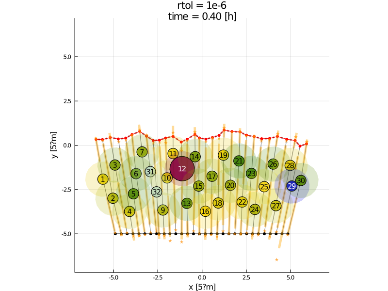</img> 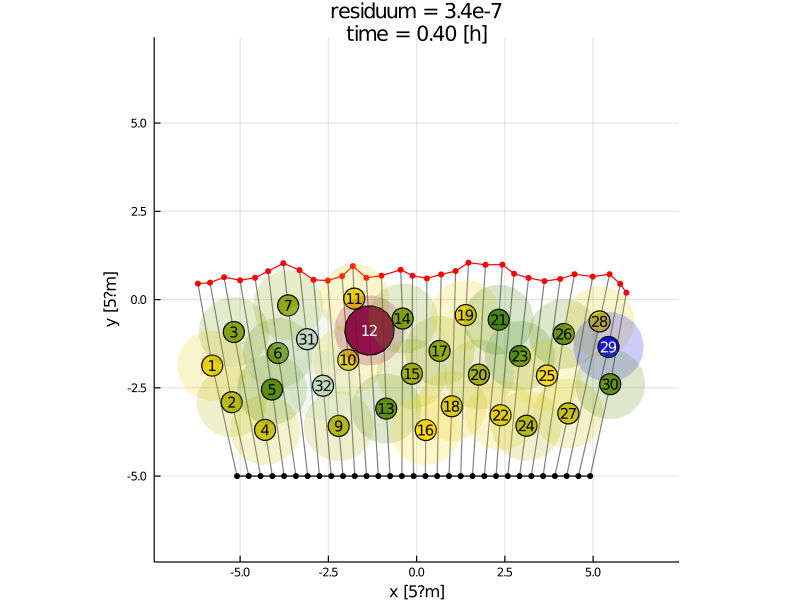</img> $\varepsilon < 10^{-6}$ needed for proper minimum. Leads to divergence/instabilities.
### Stiffness In computational contact mechanics, ODEs like $$ \dot x = - \nabla W + \sum_k \tilde{\lambda}_k \nabla c_k(x) \quad \text{s.t.} \quad c_k \geq 0.$$ are known to be stiff! - <!-- .element: class="fragment" --> Explicit methods: Courant condition forces small steps. - <!-- .element: class="fragment" --> DAHA: $\Delta t \sim 10^{-4}$ - <!-- .element: class="fragment" --> Tendency to oscillate at low tolerances. - <!-- .element: class="fragment" --> Adaptive methods: Ensure a step-size inside stability region. - <!-- .element: class="fragment" --> Still oscillating - <!-- .element: class="fragment" --> Implicit methods: Stable, but slow. - <!-- .element: class="fragment" --> Hard to implement.
### Overdamping - Damping terms in DAHA reduce oscillations and instabilities. - Downside: - Solving $W(x) = (x-1)^2$ with $x_0 = 2$ yields:<br> $x^* = 1.02044$ after 77801 iterations. 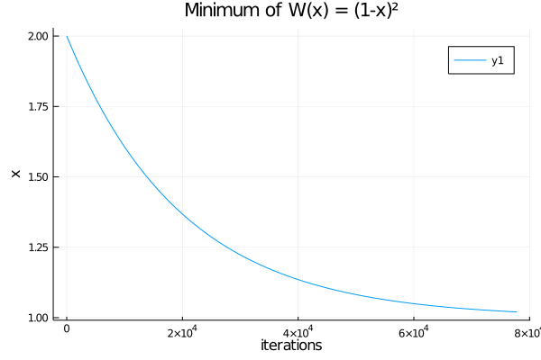</img> - Problem: We have no perfect numerical parameters for DAHA!
### Role of Lagrangian multipliers - <!-- .element: class="fragment" --> force level: $m \color{Navy}{\ddot x} = \color{Navy}{\lambda_F} \nabla c$ <br> <span style="color:#729fcf">most physical $\leftrightarrow$ overshooting and stiff numerics</span> <br> - <!-- .element: class="fragment" --> velocity level: $c \color{Navy}{\dot x} = \color{Navy}{\lambda_V} \nabla c$ <br> <span style="color:#729fcf">in between</span><br> - <!-- .element: class="fragment" --> position level: $\color{Navy}{x(t+\Delta t) - x(t)} = \color{Navy}{\lambda_P} \nabla c$ <br> <span style="color:#729fcf">no realistic elastic collisions $\leftrightarrow$ minimal overshoting and almost unconditionally stable</span> <br>
### Popular algorithms in contact mechanics - force level: - augmented Lagrangian methods - <span data-id="1">penalty method</span> - active set method (with SQP) - ... - velocity level: - projected Gauss-Seidel - projected Jacobi iteration - ... - position level: - <span data-id="2">position based dynamics (Müller et al; 2004, 2016, 2019)</span>
### Popular algorithms in contact mechanics - force level: - augmented Lagrangian methods - <span data-id="1" style="color:YellowGreen">penalty method </span> - active set method (with SQP) - ... - velocity level: - projected Gauss-Seidel - projected Jacobi iteration - ... - position level: - <span data-id="2" style="color:YellowGreen">position based dynamics (Müller et al; 2004, 2016, 2019)</span>
### Velocity-based overlap handling 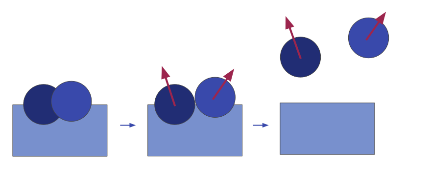</img> - Lagrangian multipliers grow during minimisation <!-- .element: class="fragment" --> - Extra terms needed to prevent overshooting (most famous: Baumgarte-stabilisation). <!-- .element: class="fragment" -->
### Position-based overlap handling </img> - No overshooting! <!-- .element: class="fragment" --> - We have to add extra assumptions to the model: Minimal displacement. <!-- .element: class="fragment" -->
# Position-based dynamics (PBD) <img src="data/pbd_1.gif" style="height:500px"></img>
## History of Position-based dynamics ### Developed for computer graphics (NVIDIA) 1. <!-- .element: class="fragment" --> M. Müller, B. Heidelberger, M. Hennix, J. Ratcliff **Position Based Dynamics <!-- .element: class="make_red" -->**, *Virtual Reality Interactions and Physical Simulations (VRIPhys)*, **2006** <br> 2. <!-- .element: class="fragment" --> M. Macklin, M. Müller, N. Chentanez **XPBD: Position-Based Simulation of Compliant Constrained Dynamics <!-- .element: class="make_red" -->**, *Motion in Games*, **2016** <br> 3. <!-- .element: class="fragment" --> M. Macklin, K. Storey, M. Lu, P. Terdiman, N. Chentanez, S. Jeschke, M. Müller <br> **Small Steps in Physics Simulation <!-- .element: class="make_red" -->**, *Symposium on Computer Animation*, **(SCA 2019)** <a href="https://matthias-research.github.io/pages/">Link to these publications</a>
## Overview of PBD Iterate: <!-- .element: class="fragment" --> - <!-- .element: class="fragment" --> integration of forces: $\quad \tilde x(t+\Delta t) = x(t) - \Delta t \mu^{-1} \nabla W(x(t))$, <br> - <!-- .element: class="fragment" --> project onto feasible set: $\quad x(t + \Delta t) = \mathrm{projectConstraints}(\tilde x(t + \Delta t))$. <br> ### How to make this efficient? <!-- .element: class="fragment" --> - <!-- .element: class="fragment" --> Use very small-steps, to reduce numerical overlap between steps - <!-- .element: class="fragment" --> Use projected Gauss-Seidel iteration for projection - <!-- .element: class="fragment" --> Lagrangian multipliers have explicit form in PBD! - <!-- .element: class="fragment" --> ... <br> ### How to make this physical! <!-- .element: class="fragment" --> - Only XPBD from 2019 is physically accurate! <!-- .element: class="fragment" --> - Trick: Mix force integration and projection of constraints. <!-- .element: class="make_red fragment" -->
## Overview of PBD 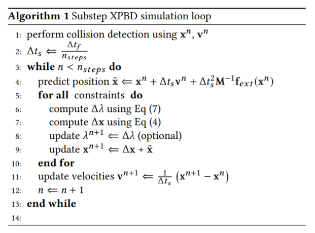</img>
## Adapted version for gradient flow 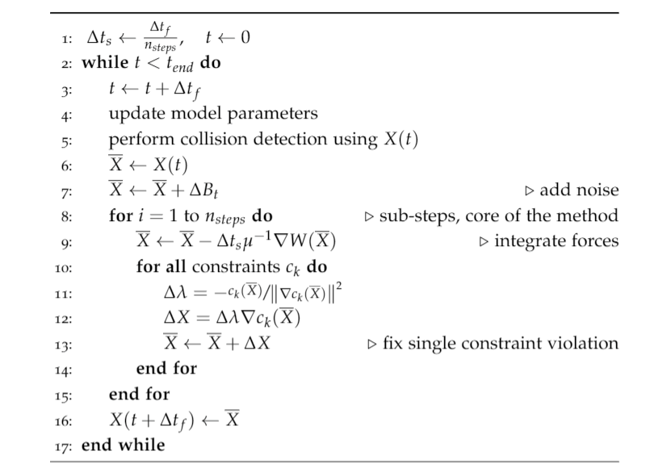</img>
## How to project a single constraint? Consider constraint $c \geq 0$ and infeasible point $x$ with $c(x) < 0$. <!-- .element: class="fragment" --> <br> Goal: Find $\Delta x = \Delta \lambda \nabla c(x)$ such that $c(x + \Delta x) = 0$ <!-- .element: class="fragment" --> <br> Newton-Raphson: $$\Rightarrow \Delta x = -\frac{c(x)}{\Vert\nabla c(x)\Vert^2} \nabla c(x)$$ <!-- .element: class="fragment" -->
## How to deal with multiple constraints? ### Iteratare over all constraints and apply correction <!-- .element: class="fragment" --> 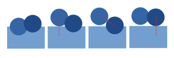</img> <!-- .element: class="fragment" --> ### Do it again... <!-- .element: class="fragment" --> 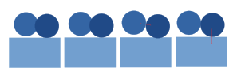</img> <!-- .element: class="fragment" -->
## How to deal with multiple constraints (cont)? We have to choose how many iterations we do: <!-- .element: class="fragment" --> - Many iterations: Good chance to solve constraints precicesly.<!-- .element: class="fragment" --> - One iteration, smaller timesteps: Makes model more physical.<!-- .element: class="fragment" --> 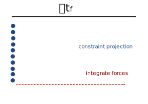</img><!-- .element: class="fragment" --> 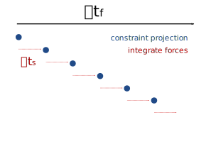</img><!-- .element: class="fragment" -->
## Trick to make it physical (Müller, 2019) Mix constraint projection with force integration! <!-- .element: class="make_red fragment" style="font-size:32px"--> 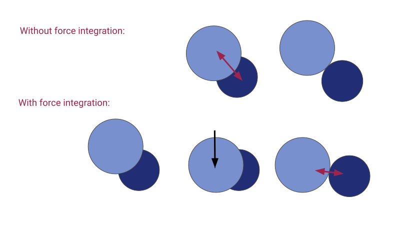</img> <!-- .element: class="fragment" -->
## Trick to make it physical (Müller, 2019, (cont) Use small time-steps! <!-- .element: class="make_red fragment" style="font-size:32px"--> - The numerical error in force integration is $(\Delta t)^2$ (Newton's law) or $\Delta t$ (gradient flow). <!-- .element: class="fragment" -->
## Trick to make it physical (Müller, 2019), (cont) 1. Use small time-steps! <!-- .element: class="make_red fragment" style="font-size:32px"--> 2. Mix constraint projection with force integration! <!-- .element: class="make_red fragment" style="font-size:32px"--> For gradient flow problems, this yields almost exact solutions!<!-- .element: class="fragment" -->
## Adapted version for gradient flow </img>
# Comparison
## Comparison <video controls data-autoplay src="data/pbd.mp4" style="height:500px"></video>
## Speed of cells 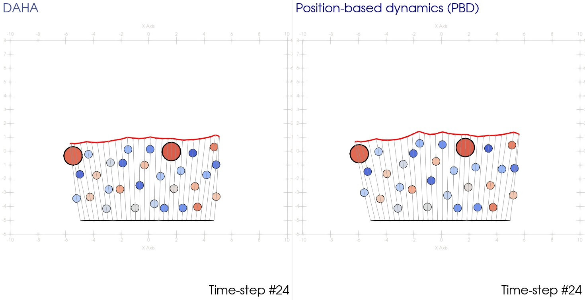</img>
## Speed of cells </img>
## Speed of cells 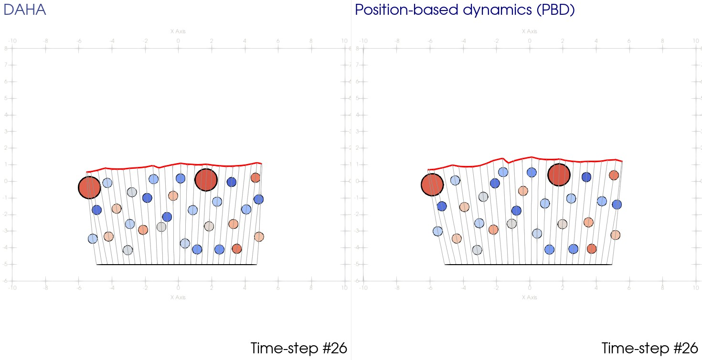</img>
## Speed of cells 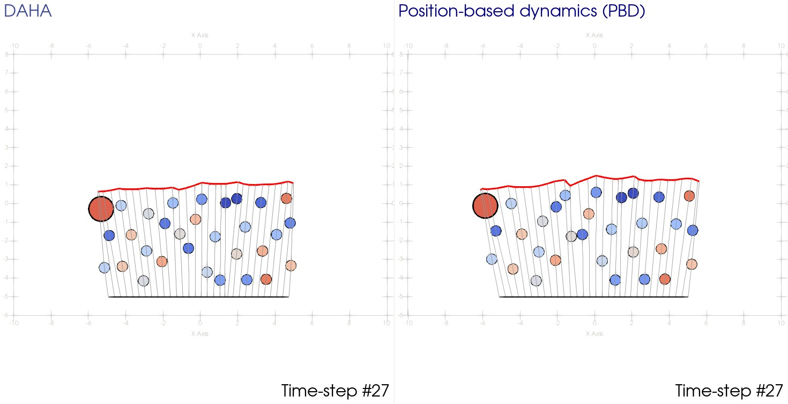</img>
## Speed of cells 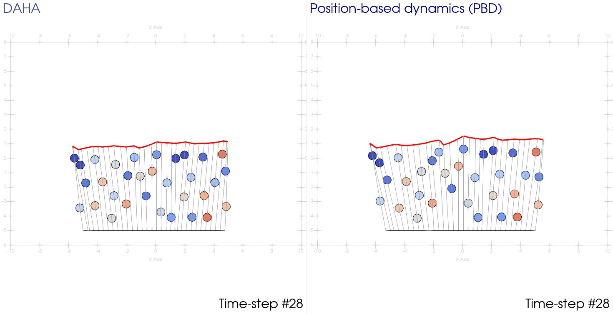</img>
# Appendix
## Tested methods | | Accuracy | Speed | Constraints | Simple | Agreement with current model | |-----------------------------------|-----------|-----------|------------------------------|--------|------------------------------| | DAHA ($\varepsilon = 10^{-6}$) | low | 1h | exact | ~ | yes | | DAHA ($\varepsilon = 10^{-7}$) | ok | 10h | exact | ~ | no | | IPOPT | very good | 30min | exact | no | no | | Penalty method (Heun) | ok | 40min | penalty | yes | ok | | Penalty method (Rosenbruck23) | ok | 20min | penalty | yes | ok | | Gradient flow with penalty method | good | 30min | often violated | yes | ok | | DAHA (Heun) | ok | 40min | exact | ~ | yes | | PBD | good | 90seconds | almost exact for small steps | YES | ok |
the final end